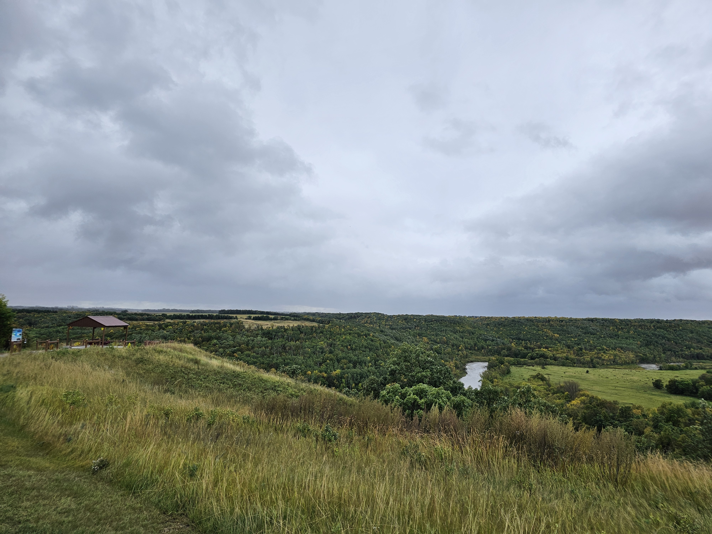

Fall is my favorite season, and usually it is far too short. We usually get a week, maybe two, of temperate fall weather and color change. But the transition from 90 degrees in August to freezing generally happens astonishingly fast.
Some years, it happens so fast that the leaves don't even get a chance to turn. A cold snap hits and the leaves all drop, littering the ground with curled green leaves.
This year, we can't get summer to let go. We were supposed to camp the last weekend of September, but we cancelled so we could get winter prep done. So there we were, unloading the camper for the season...in 87 degree temps!
In years past, we don't often get to camp the last weekend or two of September due to cold or even, occasionally, snow. And the water is usually shut off to the campgrounds the first week in October so that the lines don't freeze.
Not a problem this year! It looks like temperatures might hold well into October.
The bad part about this (besides temperate 60 degree days yet)? The leaves haven't changed much! I have pictures of us camping and visiting the Pembina Gorge in mid to late September, and the colors are gorgeous. This year, we have this:
I won't complain about the warmer weather (given the alternative), but I just hope we don't go straight from "extended summer" to winter right away and get deprived of fall entirely.

Writing update
I had plans for a couple of short stories, including an interesting story I came up with after meeting some strangers (emphasis on the STRANGE) way back in the woods on a less-traveled trail.
Nope. No progress on short stories. At least not yet.
I'm still doing planning and research for the non-fiction project, though I'm wary about it. With a non-fiction project, it becomes far too easy to stay in "research and planning mode" forever. I know I'm going to have to make sure I close the research stage and get moving on the writing/outlining stage!
But I'm not there on that, either!
Reading Update
Still very little recreational reading getting done around here. I've been reading e-textbooks for my UND computer class, instruction manuals for some new tech gadgets, and the New York Times.
The whole shelf of books that I stocked in the camper at the beginnig of summer has been unpacked into the house as part of closing the camper up for the season, after they spent the whole season just riding around on the shelf. I plan on picking one or two of them and putting them on the bedside stand. I need to get back in the habit of winding down by reading for about half an hour before bed.
What I'm watching this month
No new movies this month. Well, not intentionally, anyway.
I wasn't feeling so hot one day, so I snuggled up on the couch with hubby. He was decided to watch Mrs. Webb (or something like that), and I ended up catching most of the movie, though I did nod off here and there.
It was an awful movie. Even if I hadn't been under the weather, I wouldn't have been able to stay awake for it.
We have finally started to watch season 2 of Loki, though, and that's been great. Of course, I always prefer the characters like Loki over the standard protags, but it still tickles me that Loki got a series and Thor did not.
Classes Update
I'm still doing all my normal learning apps for Spanish, HTML/CSS, and full-stack programming.
My UND class is kicking my butt, though.
I knew I was in trouble when we got our first assignment. The assignment was to write four short programs. Each program would ask for user input and then do something based on that input. Pretty basic stuff.
The problem was that all four programs had to be written in four different languages: python, java, c++, and c...none of which I know, lol.
Well, I know a little c++ and c, but it's been a hundred years.
And, of course, this problem all stems from CSci 160 being a pre-requisite for this class. When I took the CSci 160, we learned Ada. Now, they learn Python. Which means they come into this class with at least a fair working knowledge of one of the four programs.
Me? Not so much. I'm struggling a bit, but I am managing...and I'm not giving up.
And it is definitely a great way to learn to be a better programmer.The logic is, if you learn to program in Python, it's not that hard to learn to program in something else if you get out in the real world and get hired by a company that uses a different language.
So we create our assignments in Python. Then we rewrite it in the other languages.
It's good...but it's also hard! Basically, I'm learning to program in four languages at once.
Besides learning the four languages, I've learned that I like Python and C++, I dislike Java, and C can go straight to hell where it belongs, lol.
(If I remember correctly, this is how I felt about C++ and C back in the day, too. 😂)
So, remember how I was thinking about changing my major to computer science? Yeah. While it's not off the table, I am slightly less inclined to do so, now.
I won't make any decisions until the semester is over, but I really feel like my major is up in the air.
This month's playlist.
The ten songs I'm listening to on repeat.
Something I did
I did a guest spot on a podcast last month, discussing the movie Parasite.
I am the WORST guest ever on ANY podcast, lol, because I tend to either ramble or freeze (apparently I can't talk and think at the same time).
But in this case, I'm the WORST guest EVER because the two folks who do the podcast really are movie experts and have some great discussions . . . and here's me, who generally only watches one or two movies a year and then tends to forget all about them ten minutes after I watch (which you are all familiar with, given how often I say things like, "I caught a snippet of X movie again the other day, and I think I need to re-watch the movie now").
Anyway, head to this link and give it a listen. Cut me some slack for being a movie noob AND don't let my rambling babbles get in the way of your enjoyment of the podcast.
Podcast: I Can't Believe You Made Me Watch That
Rant
You are probably aware that Verizon recently had a widespread outage. I have been complaining for a while about all the "two-step verification" that has started happening lately, and the Verizon outage was a perfect example of why it's not an ideal solution to require users to verify their identity using their mobile. When Verizon went down, so did a lot of two-step verification.
For my new job, I got some sort of USB fob thing, so when I have to log into my work accounts (or school accounts, for that matter), I can use that. But the university recently enabled the verification system for most student programs, too, including the Blackboard program where students get and submit assignments!
Any students who were part of the Verizon outage would have been locked out of all of their University accounts.
Believe me, I am all for keeping accounts safe. My debit card was once used to buy a membership to a gaming account from a Korean software company, and the transaction was immediately red-flagged and the account frozen.
So I appreciate security. But we are starting to rely too much on single methods. The phone is the perfect example. Some of my accounts give me multiple options (send an email, text, or push). But other accounts/organizations give one option only, and if that option is down, you are out of luck!
Also, the system that the university uses is dumb because, when logging on to my accounts from my mobile phone, it sends a push to my mobile phone. How exactly is that a good security method? If someone stole my phone and is trying to log on, then they have my phone in their hand and can just click the "yes, it's me" button.
It makes no sense at all.
That's it for this month. Until next month, Stay Spooky, my friends!
~~Here be monsters . . . and corgis.~~